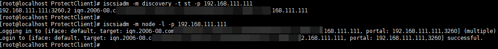
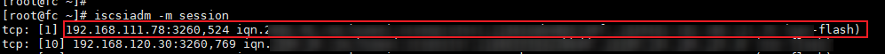
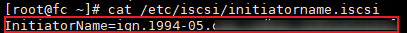

在以太网组网场景下，如果想要使用SAN传输模式或基于OceanStor Dorado LUN建立的Datastore的虚拟机磁盘需要使用存储层备份模式时，请参考本章节在客户端所在主机上登录iSCSI启动器。
前提条件
客户端所在主机已安装iSCSI启动器（iscsi-initiator-utils）。具体操作请参见《客户端安装指南》中的“安装iSCSI启动器（适用于VMware）”章节。
操作步骤
以下操作以生产存储设备为OceanStor Dorado为例：
- 登录ESXi Datastore对应的生产存储设备，查询iSCSI逻辑端口，获取逻辑端口IP。
- 登录DeviceManager。
- 选择“服务 > 网络 > 逻辑端口”。
- 在信息显示区，查询“数据协议”为iSCSI的逻辑端口，记录逻辑端口IP。
- 在客户端所在主机上，依次执行以下命令，登录iSCSI启动器。
iscsiadm -m discovery -t st -p IP
iscsiadm -m node -l -p IP
回显类似如下：

- 在客户端所在主机上，执行以下命令，查看session信息，确认生产存储设备的IQN状态在线。
iscsiadm -m session
如果回显包含逻辑端口信息，表示IQN状态在线。

- 在客户端所在主机上，执行以下命令，获取主机的IQN。
cat /etc/iscsi/initiatorname.iscsi
回显类似如下：

- 在ESXi Datastore对应的生产存储设备上，确认客户端所在主机的IQN状态是否在线。
- 登录DeviceManager。
- 选择“服务 > 块服务 > 主机组 > 启动器 > iSCSI”。
- 在“iSCSI”页签，查询4获取的IQN，确认IQN状态是否为在线。